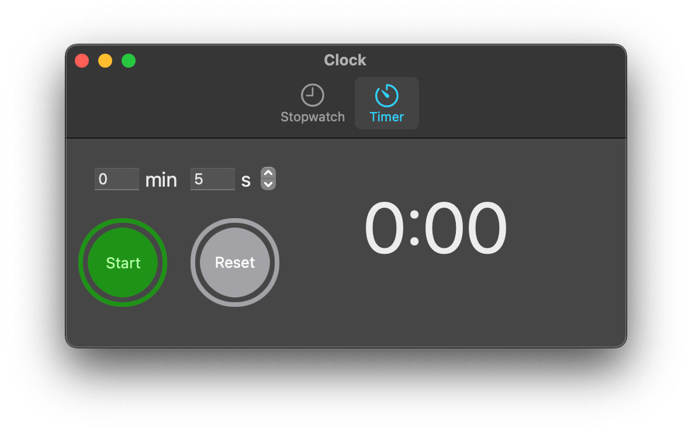

Wiktor Wójcik
Clock
A clock for your Mac
One of the modes is stopwatch. It lets you count the time just by clicking start button.

Another mode is timer. It lets you set a timer. When the time is up, Clock will let you know using sound.